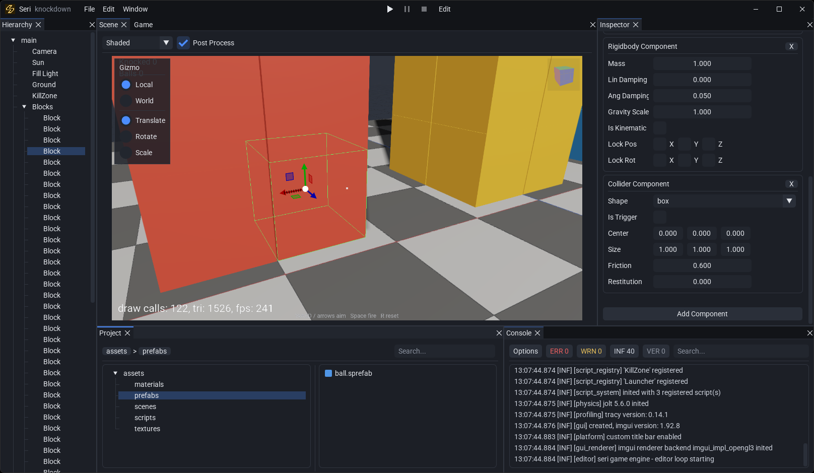
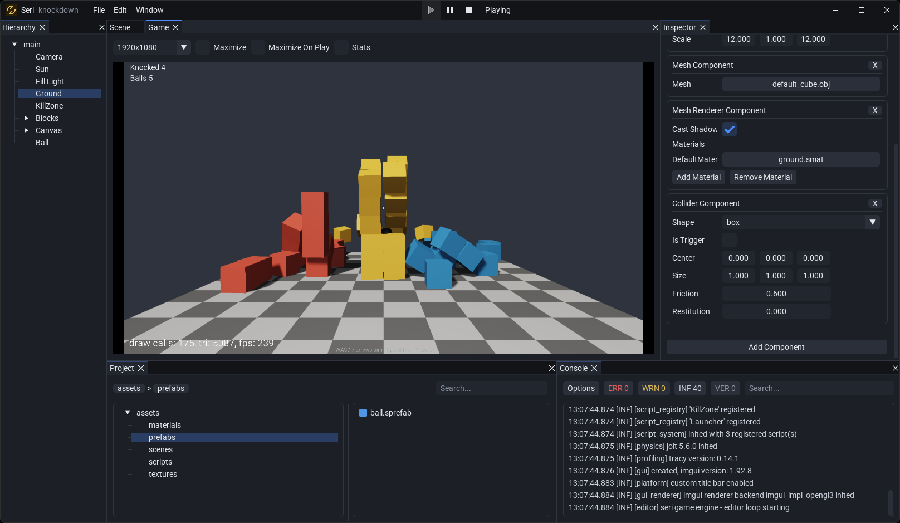

Entity component system
Scenes are EnTT registries of entities with transform, renderer, light, camera, UI, physics and script components, saved as YAML.
A 2D and 3D game engine written in C++20 on OpenGL 4.6. It has an entity component system, PBR rendering with shadows, Jolt physics, Lua scripting and an editor for building and shipping games.

Scenes are EnTT registries of entities with transform, renderer, light, camera, UI, physics and script components, saved as YAML.
Forward renderer with PBR materials, directional, point and spot lights, shadow mapping, skybox, instancing, FXAA and post processing.
Model loading through assimp, skinned meshes and skeletal animation driven by an animator component.
Jolt Physics rigidbodies with box, sphere and capsule colliders, collision and trigger callbacks, and raycasts.
Lua 5.5 scripts with lifecycle callbacks, fields you can edit in the inspector, and hot reload when you save.
Canvas UI with anchored rects, sprites, buttons and FreeType text rendering.
Dear ImGui editor with docking panels, hierarchy, inspector, project browser, console, gizmos, scene and game views, and play mode.
A launcher to create and open projects, prefabs, audio through miniaudio, and File > Build to export a standalone game.
Tracy profiler zones, OpenGL debug output, and premake actions to install, build, package and document the engine.




Gameplay is written in Lua. A script is a table with callbacks such as OnStart, OnUpdate and OnTriggerEnter. Entries in its fields table show up in the inspector, so each entity can tune them without touching code.
Scripts reach the scene, input, physics, audio and UI through a small set of globals.
local Mover = {
fields = {
speed = 2.0,
},
}
function Mover:OnUpdate(dt)
local direction = Vec3(0, 0, 0)
if Input.GetKey(Key.w) then direction.z = direction.z - 1 end
if Input.GetKey(Key.s) then direction.z = direction.z + 1 end
if Input.GetKey(Key.a) then direction.x = direction.x - 1 end
if Input.GetKey(Key.d) then direction.x = direction.x + 1 end
local transform = self.entity.transform
local step = direction:Normalized() * (self.speed * dt)
transform.position = transform.position + step
end
return MoverEditor.exe on Windows or ./Editor on Linux.The engine builds with Visual Studio 2026 on Windows and GCC on Linux. Dependencies come from vcpkg and the build is driven by premake actions:
./seri.sh install # or seri.bat on Windows
./seri.sh generate
./seri.sh build --config=releaseSee INSTALL.md for the full steps.